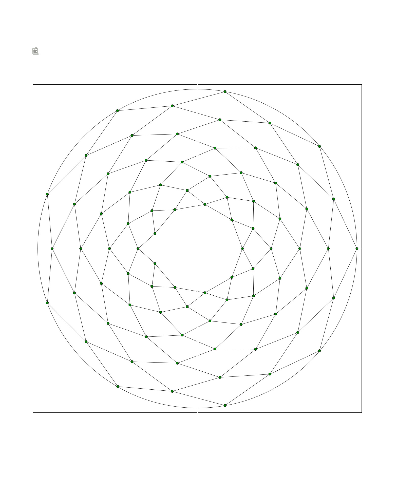

Gogame - Variantes¶
Atari go¶
Sur 9x9
Placer un crosscut au centre du goban.
Definir le nombre de pierre que l on souhaite capturer pour remporter la victoire.
Jouer normalement le premier arrive au nombre defini de prisonier gagne.
Blind go¶
On joue normalement, mais a chaque fois qu on joue une pierre on retire celle que le partenaire vient de jouer. Il est donc necessaire de retenir l ensemble des coups precedents.
Deglingo¶
par Ronin
A la maniere de l Unicolor. Sauf que les deux premieres pierres sont noires, puis les deux suivantes blanches et ainsi de suite.
Dice go¶
From Kalyptane (ou un de ses inities je ne sais plus)
Avant de commencer a jouer on decide ce que represente chaque face du de
Par exemple
1: passe
2: keima
3: tobi
4: kosumi
5: invasion
6: nobi
Chaque joueur a sa definition
Jouer une dizaine d echange. puis a chaque coup on jette le des pour savoir ce qu on joue.
Pour compliquer:
on peut imposer un certain nombre de mauvais coup dans le choix a faire
on peut obliger d avoir l action de passer dans les choix, et il faut que les deux joueurs passent pour que la partie se finissent
Fantome¶
Le go-fantôme est une variante du go se jouant à deux, et un arbitre.
Les joueurs jouent dos à dos, chacun sur son goban, sans voir les coups de l’adversaire. L’arbitre est chargé de noter la partie sur un troisième goban, d’annoncer les « coups impossibles » (à cause de la présence d’une pierre adverse, de la règle du suicide, d’un ko…) ainsi que les atari et les prises de pierre.
Une partie est généralement jouée sur 9×9.
La strasbourgeoise¶
Pio2001 (Guillaume)Hier à 23:31 Salut, la règle strasbourgeoise (ou “stone scoring”, en anglais, également équivalent à la notion de “group tax”), c’est celui qui a le plus de pierres sur le goban qui est le gagnant. Il faut donc remplir tous ses territoires jusqu’à ce qu’il n’y ait plus que deux yeux dans chacun. Le score (nombre de pierres) est alors maximal. Cela revient au même que la règle française / chinoise avec “group tax” : on est pénalisé de deux points par groupe vivant (les deux yeux). L’intérêt pédagogique est de faire découvrir pourquoi on passe notre tour à un certain moment. Avec cette règle, on apprend par l’exemple pourquoi l’invasion devient inutile à la fin et pourquoi les espaces vides sont des points pour nous. A moment donné, il devient évident qu’au lieu de tout remplir, on peut faire comme si, et compter les points.
Le go du demineur¶
par Ronin
Deux joueurs et un mineur.
Le mineur place des mines sur le goban sans les annoncers aux joueurs.
il definit pour chaque mine:
son intersection
son effet si elle explose
son effet si elle est desamorce
Ces mines peuvent soient exploser, si une pierres est posee dessus, soient etre desamorces si les libertes de l intersections sont prises.
Si une mines est desamorces elle ne peut plus ni explosee ni etre desamorce de nouveau.
Si une mine explose, elle est toujours active et peux donc toujours re-exploser ou etre desamorce
Les effets sont libres de choix au mineur dans la mesure du raisonable
Exemple
donne un nombre de pierres gratuites a poser (defini au prealable, ou au hasard grace a un de)
donne le droit 5 fois dans la partie de repndre un ko directement
inverse la couleur des pierres de chaque hoshis (les pierres retirer vont dans les bols)
Donne une liberte invisible au pierre qui ont desamorces la mine (il faudra donner une pierre au partenaire pour pouvoir les capturer)
tout les 50 coups le joueur est obliger de passer
etc
Lucky go¶
Sur 9x9
Prendre dix pierres noires et les mettre dans le bol blanc. Prendre dix pierres blanches et les mettre dans le bol noir.
Pour jouer:
decider on l on veut jouer
l indiquer a son partenaire
prendre une pierre dans son bol sans regarder
la jouer, qu elle soit noire ou blanche
Plateau spherique¶
Play in this kind of goban
Torigo¶
Les bords ne sont plus des bords, la ligne de demarcation droit partage ses libertes avec la ligne de demarcation droit. De meme pour le haut et le bas
Tsuke go¶
Jouer une dizaine d echange. Puis les coups suivants doivent etre obligatoirement en tsuke (kosumi accepte)
Unicolor¶
Chacun des partenaires a un bol de pierres blanches. Chaque pierre jouer nous appartient. Il est donc necessaire de retenir les coups jouer.